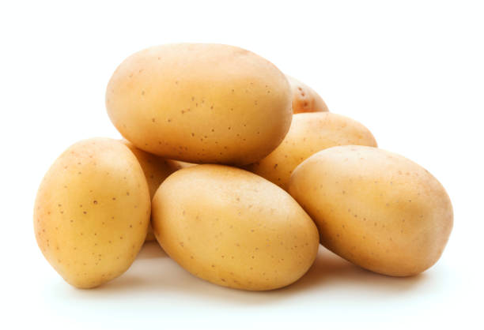

Fruiters Best Sellers!
| Best Seller this week Fruits | Fruits | Health benefits |
|---|---|---|
| Apples |  |
Contians Fiber,Vitamin C and Potassium |
| Mangoes |  |
The vitamins, minerals, and antioxidants in mangos can provide important health benefits. For example, vitamin K helps your blood clot effectively and helps prevent anemia. It also plays an important role in helping strengthen your bones. |
| Bannas |  |
Contians Fiber,Vitamin C and Potassium |
Vegetables
| Best Seller this week Vegetables | Vegetables | Health Benefits |
|---|---|---|
| Tomatoe | Contians Fiber,Vitamin C and Potassium | |
| Potatoes |  | The vitamins, minerals, and antioxidants in mangos can provide important health benefits. For example, vitamin K helps your blood clot effectively and helps prevent anemia. It also plays an important role in helping strengthen your bones. |
| Onions |  |
Contians Fiber,Vitamin C and Potassium |